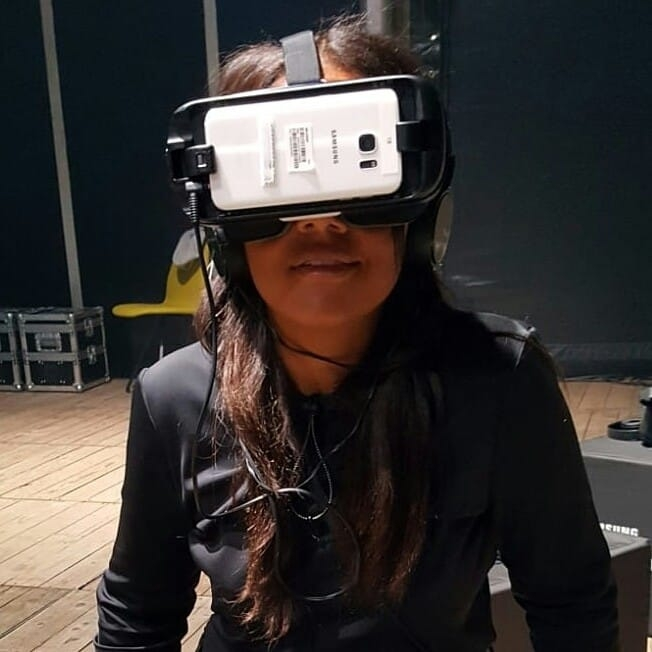

Ux-research Projects
Outcomes & Learnings

Ever since I first started studying I went back and forward between Design and Technology.
This why I love how the two are becoming more interlinked than ever before.
Throughout the years I have come to see that my strength lies in development stages of the creative process.
Becoming a UX-design designer is a great way to further develop my ressearch skills while still actively work with interactive technolgies. I am happy to share my first results and learnings with you. Let's have look...
Bespoke
Hallmark gift unwrapping experience
Concept development, product testing, creative addaptations
Research for Design
Conduct Ethnographic research on dancefitness group "Salsation".
Field research, group participations and interview methods.

Design and Creativity
Creative stages portfolio
From ideation to itterations, learning the inns and outs of Design Thinking.
Project 1: "Portolio Cover"
With this work I reflect on the importanance for me as reseacher by using technology to see through layers of data.
Project 2:
"Linz Sketch"
As part of my field research, i created a collage sketch that shows my experience during Ars Electronic Festival.
Project 3: "Waiting time"
The research process is circular, from these sketching sessions I learned the importance of clear presentation of data.
What I am learning...
Competences practiced as UX-researcher so far.
Having the ability to develop my professional skills within the world of UX-design.